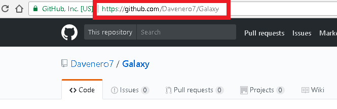

Como Subir un proyecto a GitHub
1.-Abrimos Git CMD y nos situamos en la ruta del original del proyecto en este caso es

2.- Iniciamos un repositorio con el comando

3.- Checamos el status del proyecto y los archivos que no se han subido estaran en rojo
4.- Después con el comando git add –A Agregaremos todo el contenido de la carpeta si queremos agregar un solo
Para un subir un solo archivo seria git add nombre.extension
Nota: ( git add . ) donde el punto representa el directorio actual, por lo que se agrega todo en y debajo de él.
El ( git add -A ) asegura que incluso se incluyan las eliminaciones de archivos.
Extra si hacemos un Git Status los archivos aparecen en verde de preparados para subir

5.- Ahora le tenemos que agregar un nombre, comentario ó versión se debe poner el comando
6.-Ya tenemos el proyecto preparado para subirlo ahora vamos a decirle a donde subirlo para eso vamos a utilizar el comando
El link lo sacaremos de la pagina principal de Github de nuestro usuario

7.-Ya para subirlo utilizaremos el siguiente comando
Nota: pedirá las credenciales de GitHub
Listo ya se habrá subido
Actualizar
Si lo que queremos es actualizar son los siguientes 4 comandos
1.-agregar los nuevos archivos git add –A
2.- checar el status git status
3.-ponerle nombre, comentario o versión git commit –m “versión X.X”
4.-subirlo con git push origin master